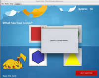

| About Me | |
 |
Hi ! Thanks for visiting my webpage. I am Baris Tevfik from Turkey. I was born in the city of Izmir on the Aegean coast. But, grew up in Istanbul *, and graduated from high school in 2007. Then, I went to Colorado for college. I recieved my B.Sc degree in Computer Engineering at Colorado State University in 2012. Currently, I am in M.Eng program at Boston University. |
| Projects | |
|
In my undergrad senior design project, I have worked on Augmented Reality games, specifically designed for patients that need upper-limb rehabilitation. Our project won the third place prize among other ECE projects at the end of that year. You can learn more about this here. Our team was also on the engineering college publication this year. |
|
In Fall 2012, our final assignment in EC544 (Networking the Pysical World) was to create something new using our knowledge we had learned in the class. Prior to this, we had created a web controlled LED and autonomous (not so sophisticated) car among other projects. So our team decided to create a web-controlled car as a combination of these assignments. We had to come up with a solution in a short time and implement it. Therefore we decided to use a netbook to control the car via internet. The netbook had a web-server installed, and whoever visited the webpage were able to control the car. We did a complete run around the first floor of Photonics building. The website also had a webcam stream embedded in it, so the driver was able to see his actions in real time. Moreover a friend from India was able to access the car and control it for a while. |
|
Also in Fall 2012, as a group of 9 students we worked on a software engineering project. The goal of the project was to create an application for kids to explore and learn colors, shapes, animals etc. The application is created using JAVA and called Super Kids: The Ultimate Adventure. The kids part of the application consists of tutorial and question modes. Moreover, parents are able to add/edit/remove questions, review their childrens' progress and set achievements. There were two teams splitting up GUI and back-end workload. The Github repository of this project can be found here. |
 |
| Pictures | |

Istanbul (located on two continents: Asia and Europe) Cappadocia (Google it !!) 
Boston (old, buried in new) China (yes. i did climb it) 
Devil's Tower (from the UFO movie. Remember?) Grand Canyon (don't fall !!) Colosseum (my name is Maximus Decimus Meridius) Rushmore (they are watching you) | |